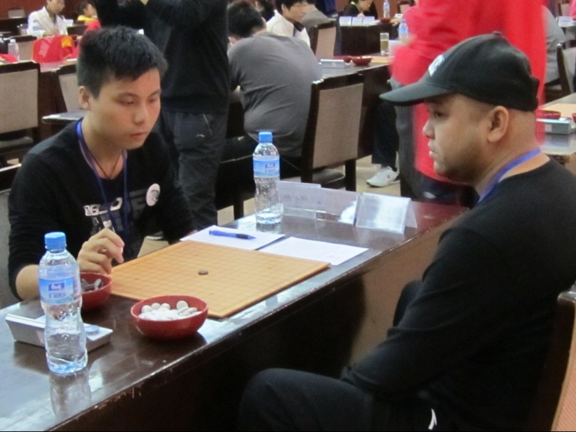
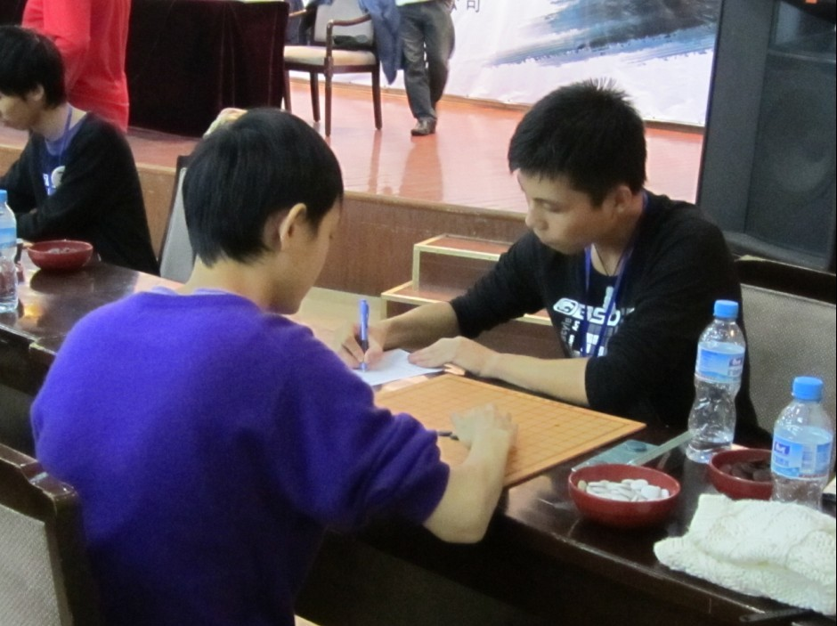
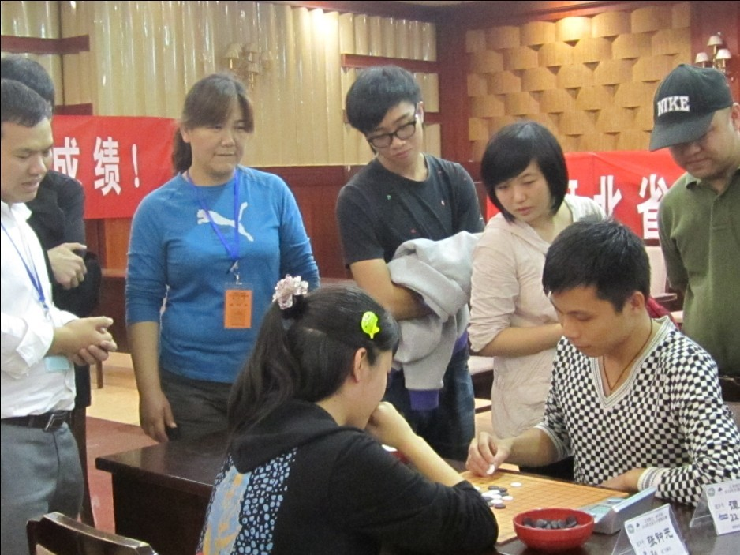

2010全锦赛总结
#1 2010全锦赛总结 作者：歇菜了 发表时间：2010-10-12 22:30:55
听说不写总结要罚款，炫飞管理层太黑心啦~~~不能不写了唉
赛前经过一翻折腾,很开心又有机会跟咱家炫飞的一起比赛啦。。。。。。可惜比赛的地点依旧是破破的石家庄，没有一点可以玩的地方。。。。
(不会写开头，看见清缘这么写的，顺便抄了下开头，好了进入正题）
这次比赛基本一共下了10局，除了最后一局我和白痴争夺21名的时候算是特别认真的在算棋，其他的基本上都没怎么算过。算了个大概就往上扔，扔完后就发现我SB了，该杀的杀不出了，能防的防不住了。
赢的就不发了。。。棋谱基本上都没什么技术含量，第一局谱杀，第二局本来已经没杀了，我一看30多手就觉得已经不在指望能杀出来了，心里一直在念，对手活3不当，冲4不挡。结果下了100多手还是没出错，我很郁闷，在110手的时候可能上帝听见了我的祷告，终于对手被我特别无耻的弄晕了，就是那种不防都没杀的棋，防了一下结果我杀了！
第三局我执黑对黄圣明
=======上图对应的爱五子棋谱代码如下，以便你拆解：========
h8h9h6i10i6i9g9g8j11i7i8h10j8g6k6k8j9j7f7k10j10j12l7k12i11h12i12f10
======================================================
瑞星开局他下了团12，我感觉我团12就不可能杀的出，就随便下了个不会的15。棋下到23的时候其实能防住，但是他感觉防不住，就到上面强攻。25本来想挡27的，后来一看，他既然强攻，那我就多做几个活2，一会他就不知道怎么防了，谁知道他一下26 28我就SB了，感觉自己像个无禁选手。。。一点不会看抓禁的手段。
第六局对杜卫鹏
=======上图对应的爱五子棋谱代码如下，以便你拆解：========
h8h9h6i10i6i9g9g8j11i7i8g6k10j8k7j9l9m8h11f7e6h5e8g7h7j5i5k8k6n8l8
======================================================
前19手都是定式，20 22后，我看了半天，本来是想的他有这个L8的抓33，但是我一想如果我29下K6的话，那个L8不就不是33了吗？好像是44解33，我很开心的挡了这个23，就等他来抓我假禁了，谁知道下到29以后，他30手一冲。。。我悲哀的发现直接就VCF抓44了。。原来23挡反了。。。我果然还是适合下无禁！
对清缘的棋，他既然不发我也不发了，大致就是他必胜没下出来，不过那个必胜是人一般都下不出来，然后就到我必胜了，他活了个3，我本来想反挡的，反挡就必胜了，但是我没反挡，回去一看还是能杀，然后他又活了个3，我又挡错，一边必胜，一边必败。。。结果我很欢乐的挡了个必败，他就杀了。。。唉，没办法，挡错是我的强项嘛。。。。
比赛还是很开心的，虽然成绩不怎么样，但是玩的挺好，有机会的话，下次继续去当炮灰。当然，如果大家都不去玩的话，我也就不去当炮灰了
［ 掌棋宣传员 于 2010-10-12 22:46:48 时花20金币送鲜花一朵］
［ 掌棋宣传员 于 2010-10-12 22:46:51 时花20金币送鲜花一朵］
［ 炫飞冰弦 于 2010-10-14 0:19:06 时奖励此帖[金币加 100 威望加1］
#2 Re:2010全锦赛总结 作者：炫飞兔子 发表时间：2010-10-13 9:28:32
猪就是猪，打自家的才认真#3 Re:2010全锦赛总结 作者：炫飞兔子 发表时间：2010-10-13 9:30:25
还有啊，你啊估计是自动被抓的，谁不知道你好这口，嘿嘿#4 Re:2010全锦赛总结 作者：歇菜了 发表时间：2010-10-13 17:35:52
不是没认真。。是太弱了，感觉下的有点急#5 Re:2010全锦赛总结 作者：炫飞冰弦 发表时间：2010-10-14 0:18:50
邪恶地飘过……有句话不是这么说的吗 （*场得意 *场失意）#6 Re:2010全锦赛总结 作者：冰雪笑醉 发表时间：2010-10-17 15:12:28

#7 Re:2010全锦赛总结 作者：岑小鱼 发表时间：2010-10-17 19:11:43
现实比赛过估计对心理控制力提高有好处#8 Re:2010全锦赛总结 作者：老奶奶 发表时间：2010-10-19 20:26:21
谭月月!!!#9 Re:2010全锦赛总结 作者：離墨 发表时间：2010-10-20 12:15:13
西瓜哥哥~~~#10 Re:2010全锦赛总结 作者：迷糊娃娃 发表时间：2010-10-20 12:16:23
可怜的西瓜哥哥啊！你还要请我吃西瓜呢！哇咔咔#11 Re:2010全锦赛总结 作者：炫飞冰弦 发表时间：2010-10-20 18:01:09
附 谈心灵童鞋比赛照片数张～



#12 Re:2010全锦赛总结 作者：老奶奶 发表时间：2010-10-20 23:49:00
谭月月把棋盘穿在了身上！！！#13 Re:2010全锦赛总结 作者：冰雪笑醉 发表时间：2010-10-21 0:07:23
 WS
WS
#14 Re:2010全锦赛总结 作者：伊依 发表时间：2010-10-21 0:14:13
KK说的太对了